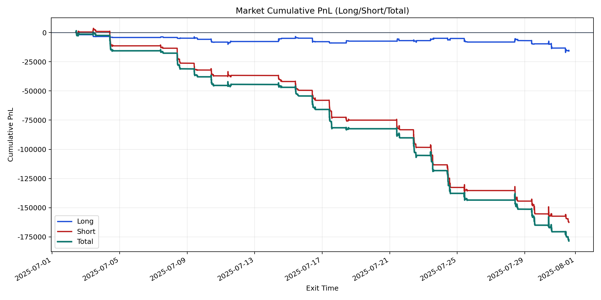
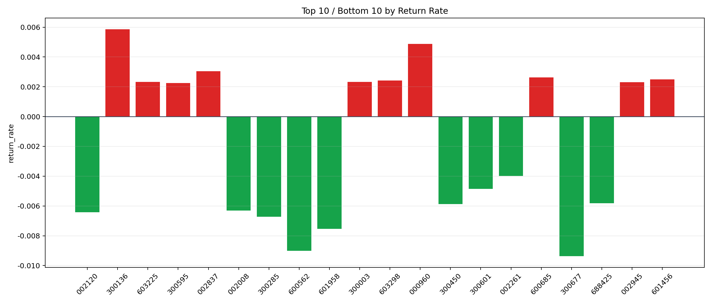

| repo_root | /home/haoranyou/data/output/dynamic_AUM_TAKER_index500 |
|---|---|
| period_months | 1 |
| period_label | 2025-07-02_to_2025-07-31 |
| start_time | 2025-07-02 09:50:12 |
| end_time | 2025-07-31 14:45:42 |
| n_trades | 8514 |
| n_symbols | 102 |
| total_pnl | -178467.69880000124 |
| long_total_pnl | -15818.46619999919 |
| short_total_pnl | -162649.23260000203 |
| total_entry_notional | 152288908.0 |
| long_entry_notional | 38635814.0 |
| short_entry_notional | 113653093.99999999 |
| total_return_rate | -0.0011719021506149433 |
| long_return_rate | -0.00040942494960761506 |
| short_return_rate | -0.001431102549658719 |
| top_symbols_by_return | ["300136", "000960", "002837", "600685", "601456", "603298", "300003", "603225", "002945", "300595"] |
| bottom_symbols_by_return | ["300677", "600562", "601958", "300285", "002120", "002008", "300450", "688425", "300601", "002261"] |

